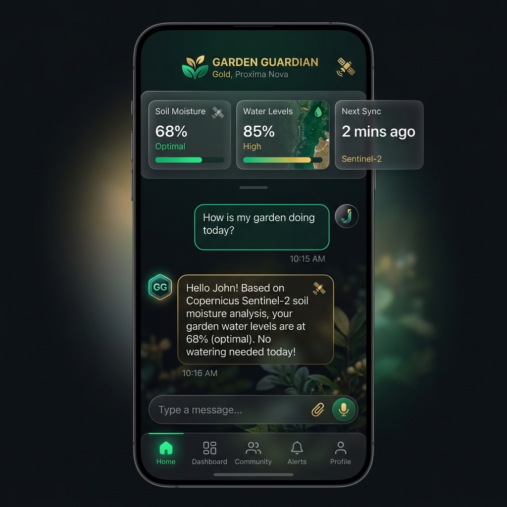
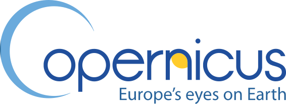
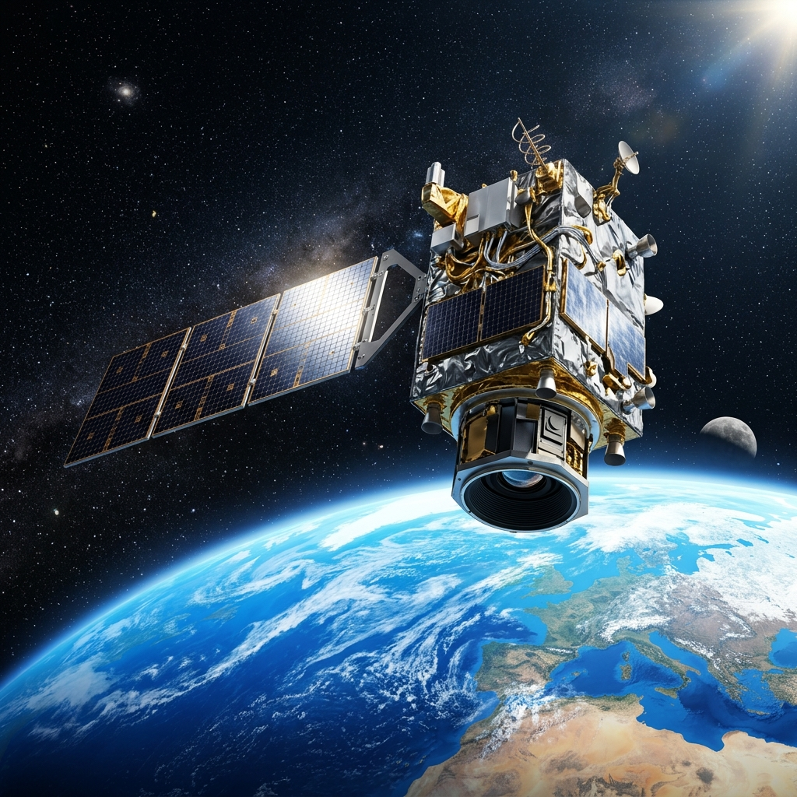
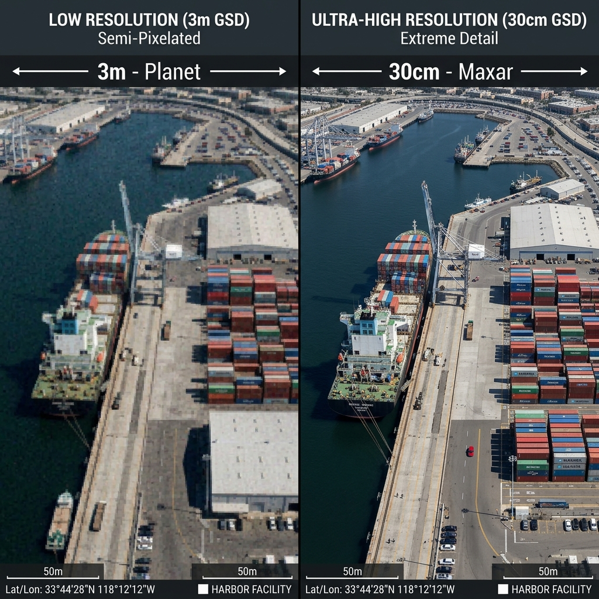
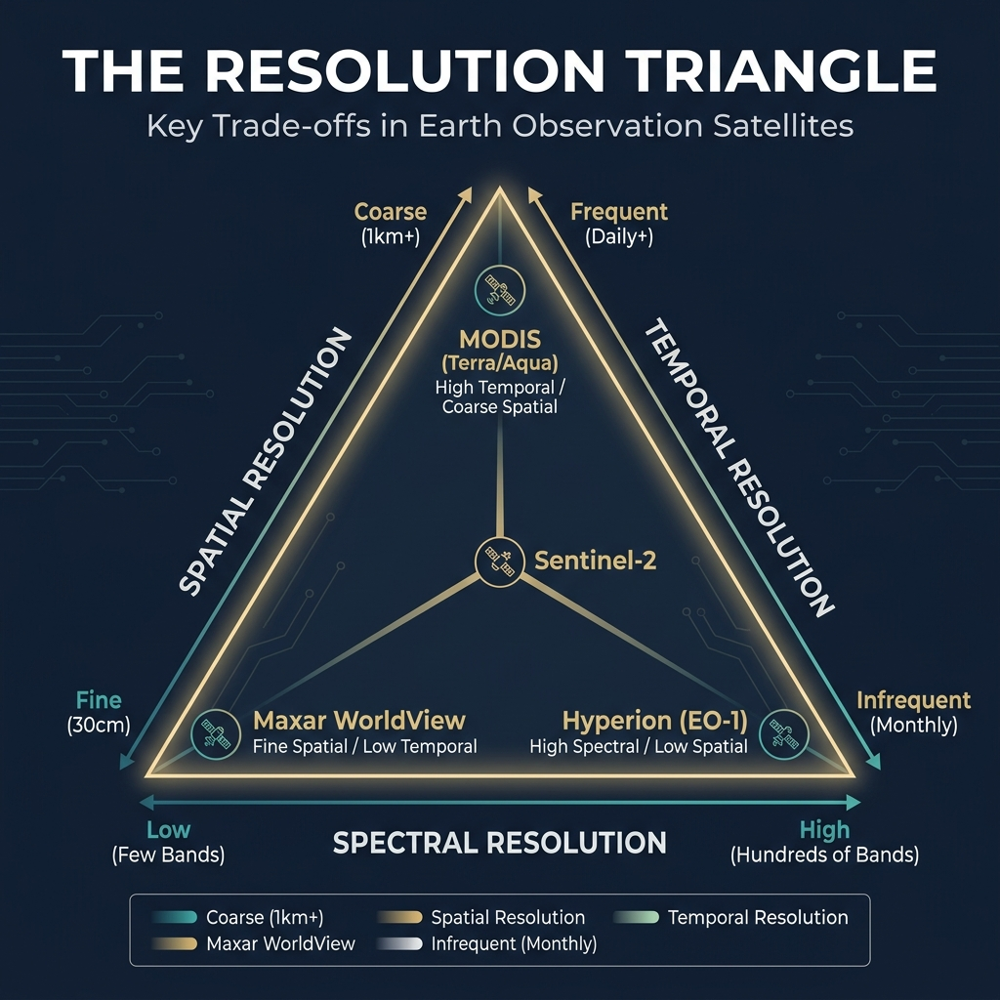
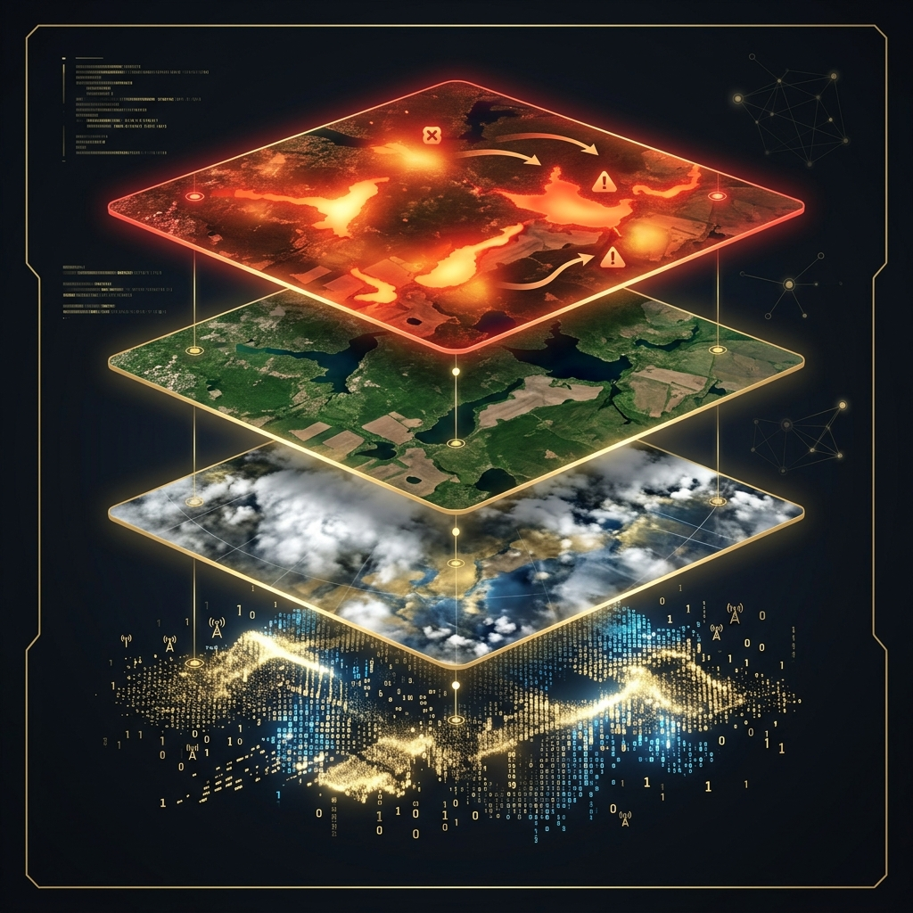
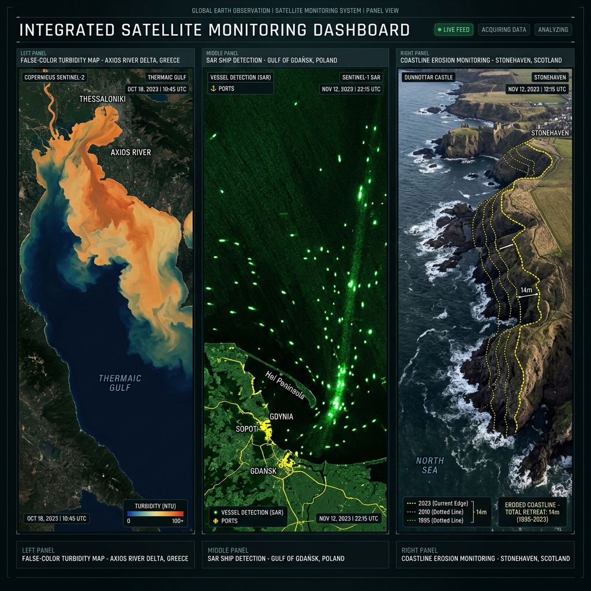
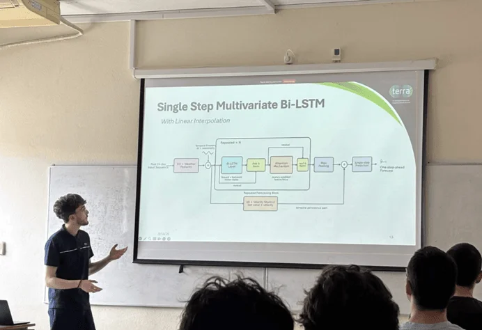
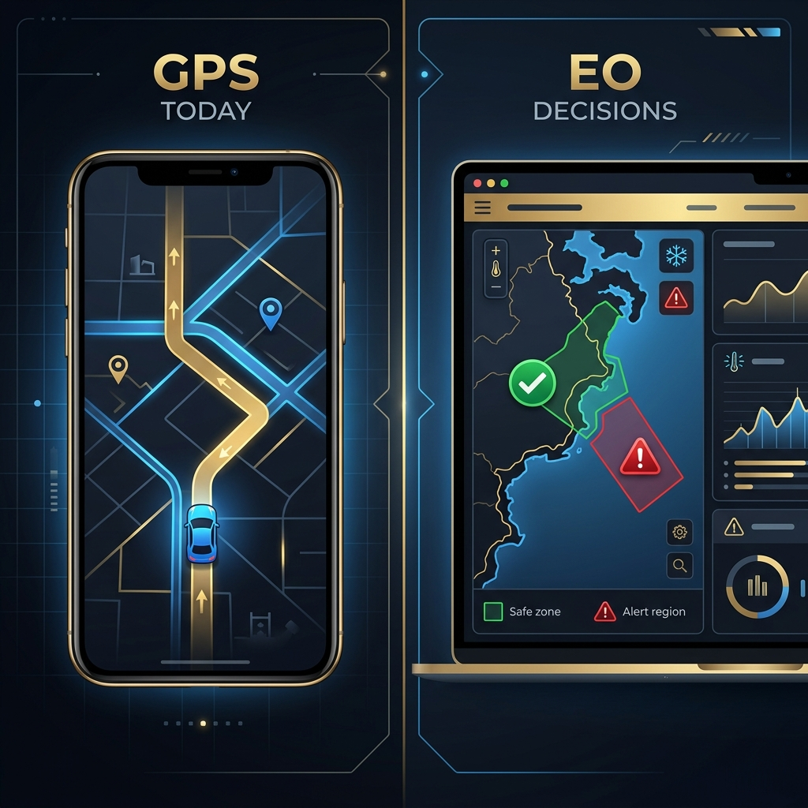
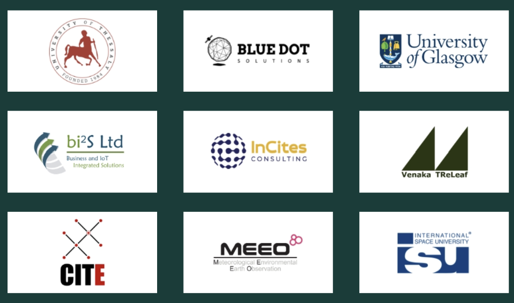

Horizon Europe · Grant No. 101189962 · M18 Milestone
TERRA Live:
Intelligent Climate Services
from Space
Decisions, Not Pixels.
Fusing Copernicus Earth Observation with AI and Digital Twins to deliver processed climate intelligence, not raw imagery.
Audience Poll
A Silent Revolution
Who used GPS today?
Almost every hand in the room goes up. You used it for maps, weather, ridesharing, or routing a package. It is completely integrated into daily life.
Who used Earth Observation today?
Almost no hands go up. Yet, satellite data determined the flood risk of your building, assessed the health of the crops for your lunch, and routed the ship carrying your smartphone.
The Earth Observation Disconnect
We rely on the insights, but we remain disconnected from the data itself. Satellite information is currently locked behind technical barriers, high processing costs, and complex files.
The goal of the TERRA project is to close this gap, translating raw data into immediately actionable decisions for local administrators, coastal managers, and security agencies.

🔍 Click to ZoomThe Perspective
The Overview Effect
Astronauts experience a cognitive shift when viewing Earth from orbit: the Overview Effect. They see our planet as a single, fragile, and deeply interconnected ecosystem.
Satellite technology grants us this perspective every day. Earth Observation is a continuous medical check-up for the planet, repeated every few days from 700 kilometers above.
- Optical sensors capture visible and infrared light, showing changes in vegetation, soil moisture, and water quality
- Radar (SAR) bounces microwaves off the surface, allowing us to see through clouds, day and night
- Free historical archives provide 6 to 8 years of baseline records, letting us trace environmental shifts
Europe's Eyes in the Sky
Copernicus & the Sentinels

Copernicus is the European Union's Earth Observation programme, the largest in the world. It operates a fleet of Sentinel satellites, each designed for a different mission. The data has been available for 6-8 years, giving us powerful historical baselines.
Sentinel-1
C-Band Radar (SAR)
Sees through clouds, day and night. Key for ship detection, oil spill tracking, and mapping changes in coastlines.

Sentinel-2 Optical SatelliteSentinel-2
Multispectral Optical
13 spectral bands. Highly accurate for land classification, vegetation health, and inland/coastal water color.
Sentinel-3
Ocean & Land Color
Wide-swath sensors. Measures sea surface temperature, algal blooms, and coastal water quality parameters.
All Copernicus data is free, open, and publicly accessible. Petabytes of imagery are generated every day.
The Commercial Constellations
New Space: Planet & Maxar
While the European Copernicus fleet provides a comprehensive, free public foundation, commercial New Space constellations add targeted temporal frequency and high spatial detail.
Planet: Daily Global Coverage
Utilizing a fleet of over 200 Dove CubeSats, Planet images the entire landmass of the Earth every single day.
- Temporal: Daily revisit rates to spot rapid changes
- Spatial: Approx. 3 meters per pixel
Maxar: Ultra-High Resolution
Deploying large, high-altitude optical satellites, Maxar captures detailed, task-specific imagery of target regions.
- Spatial: Extreme visual detail (down to 30 cm/pixel)
- Application: Damage mapping, infrastructure, defense

🔍 Click to ZoomFusing the free, systematic Sentinel data with commercial targeted imagery yields complete environmental intelligence.
Satellite Fundamentals
The Three Dimensions of Resolution
When designing an Earth Observation service, developers must navigate a fundamental trade-off between three types of resolution:
- Spatial Resolution: The size of the smallest object detectable on the ground. Ranges from 10 meters (Sentinel-2) to 30 centimeters (Maxar).
- Temporal Resolution: The frequency of passes over the same location. Ranges from weeks, to 5 days (Sentinel-2), to daily (Planet).
- Spectral Resolution: The number and width of light bands captured. Allows sensors to look beyond visible light to identify water stress, chlorophyll, or soil types.
No single satellite excels at all three. True intelligence relies on data fusion: merging various satellites to get the best of each parameter.

From Pixels to Action
Data Processing Levels
Earth Observation data is structured into processing levels, transforming raw instrument measurements into calibrated, atmospherically-corrected observations, and finally into environmental models.
Level 0 & Level 1: Raw & Top of Atmosphere
Level 0 is raw sensor voltage and raw telemetry. Level 1 is geolocated and calibrated (Top of Atmosphere reflectance) but still contains atmospheric distortion and cloud cover.
Level 2: Surface Reflectance
Atmospherically corrected to represent what a sensor would see on the ground (Bottom of Atmosphere reflectance). This is the clean imagery used by researchers for land classification and vegetation analysis.
Level 3: Geophysical Variables
Processed indices and variables derived from Level 2, such as NDVI (vegetation index), NDWI (water index), or Chlorophyll-A concentrations in water.
Level 4: Decision Intelligence (The Last Mile)
The ultimate tier. Fusing Level 3 indicators with historical models and AI to output actionable decisions, e.g., "Close this beach due to an active pollution plume."

🔍 Click to ZoomThe Value Gap
100+ Terabytes per Day. Zero Decisions.
Every single day, public and commercial satellite fleets generate over 100 TB of raw Earth Observation data (Copernicus: ~30 TB; Planet: ~20 TB; Maxar: up to 60 TB; Landsat: ~2 TB). But a pixel is not a decision. The vast majority of this data remains functionally locked away from the public administrators, coastal managers, and security agencies who urgently need it.
Too Technical
Raw satellite data requires advanced pre-processing and GIS expertise.
Incompatible Formats
Different sensors produce data in different coordinate systems and file types.
Satellites Miss Days
Orbits have gaps. We need data interpolation and modeling to fill the intervals.
No Integration
Traditional public services lack the tools to ingest raw satellite streams.
The Solutions Layer
Decisions, Not Pixels
The traditional Earth Observation model sells imagery: raw pixels that require highly trained researchers to analyze.
The new frontier sells processed intelligence: clear answers that any decision-maker can understand and act on immediately.
TERRA acts as the intelligent last-mile service layer. It automatically processes, calibrates, and fuses raw data streams, transforming Copernicus pixels into six operational outputs:
- Pollution Alerts: Automated warnings sent before beach arrival
- Hazard Maps: Real-time visualizations showing plume movement
- Vessel Indicators: Flags identifying ships that turned off transponders
- Erosion Forecasts: 5-year predictions of shoreline retreat
Real Stories
Three Pilots Across Europe
Greece: Water Pollution
Led by University of Thessaly (iPRISM Group). Fuses Sentinel-2/3 with USV drone telemetry to predict agricultural runoff plumes 48 hours in advance in coastal Fthiotida. Explore Demonstrator
Poland: Maritime Security
Led by Blue Dot Solutions. Fuses Sentinel-1 SAR with AIS logs to track "dark vessels" disabling transponders in the Port of Gdansk, monitoring ship traffic and water quality.
Scotland: Coastal Erosion
Uses Sentinel-1/2 optical and radar imagery to run U-Net/LSTM models to extract shoreline vegetation lines, predicting retreat to protect coastal road infrastructure.

🔍 Click to ZoomImpact
From Reactive to Proactive
Decisions before the crisis: contamination alerts arrive two days ahead of ground sensors
AI accuracy in reading coastlines: machines classify what took survey teams weeks
Raw data cost: the pixels are free. The intelligence is the product.
The paradigm shift: traditional monitoring reacts to events after they happen. TERRA's AI-driven intelligence predicts environmental threats before they occur, changing satellite images into active answers.
Advanced Studies Showcase
The Intelligence Layer in Action
ISU students applied the TERRA concept of "Decisions, Not Pixels" to build operational prototypes in just two weeks, translating raw satellite records into intuitive web applications.
Fuses Rhine water level gauges with historical models to predict shipping bottlenecks 2 to 4 weeks in advance, suggesting multimodal cargo rerouting via an AI assistant.
Maps corporate assets to satellite observations, converting raw Sentinel-2 and 3 thermal and spectral records into a real-time ESG compliance score per facility.
Builds a centralized, secure space industry marketplace that connects satellite data providers directly with non-expert enterprise customers.
Detects illegal maritime activities by running AI-powered anomaly detection on Sentinel-1 radar, sending automated Telegram alerts to coast guard patrols.

🔍 Click to ZoomThe Democratization of Space
The GPS Analogy
In the 1990s, GPS was a complex technology. Using it required specialized receivers, physical charts, and mathematical training in coordinate systems.
Today, nobody reads latitude and longitude to get around. Instead, we use a navigation app that processes the raw GPS signal in the background and delivers a simple decision: "Turn left in 100 meters."
Earth Observation is currently where GPS was in the 1990s.
Public planners do not need to understand satellite orbits or band reflectance. They need the equivalent of a navigation app: a clean dashboard showing exactly where water stress, erosion, or pollution is happening.

🔍 Click to ZoomInteractive Workshop
Let's Explore Together: Live Stations
Explore the pilot capabilities interactively as we walk through the three product chains together. Select a station tab below to see Copernicus data in action!
Station Greece · Sperchios River Delta
Goal: Detect agricultural runoff and sediment pollution. Spot the pollution plume where the Sperchios River empties into the Maliakos Gulf.
Drag the slider on the map to compare the True Color S-2 image with the Water Quality Index (WQI) showing the nitrate pollution plume in orange.
Station Poland · Gdansk Harbor Sentinel-1 SAR
Goal: Spot illegal vessel activities. Fuses Sentinel-1 synthetic aperture radar (SAR) with AIS transponder logs to identify "dark vessels."
Click on the glowing SAR radar returns (dots) in Gdansk Bay to query their transponder status. Find the one that disabled its transponder!
Station Scotland · Coastline Erosion Timeline
Goal: Measure erosion and predict infrastructure threats. Uses Sentinel-1/2 fusion to map the high-tide vegetation edge.
Click the years on the timeline below to watch the coastline retreat over time. Notice the distance to the inland road shrinking!
Clicking interactive buttons runs real-time HTML/JS sandbox animations modeling actual pilot logic. Explore the full, live demonstrators on the next slide or visit terra-horizon.eu to learn more.
Interactive Demonstration
Live Platform: terra-horizon.eu
The TERRA platform combines Earth Observation, AI, and data-driven analytics for real-world environmental monitoring (water quality, coastal management, and climate hazards). Explore the live portal below or visit terra-horizon.eu to run the demonstrators and learn more.
Thank You
Decisions, Not Pixels.
The new frontier of Earth Observation is not about better cameras or more satellites. It is about turning petabytes of free public data into the specific decisions that protect water, coasts, and communities. That is what TERRA builds.
Consortium: 9 partners across 7 countries.
Project Details: Grant No. 101189962 · Duration: 3 Years (1 Jan 2025 to 31 Dec 2027) · Funding: €1,999,970.45.

🔍 Click to ZoomLatest Project Milestones (June 2026)
6th Project Board Meeting online. Reviewed demonstrator progress and platform integration.
AI Pervasive Systems (iPRISM) lecture at UTH on AI-driven water pollution forecasting.
TERRA Live Showcase at Factory 2026 Workshop, hosted at ISU Strasbourg.